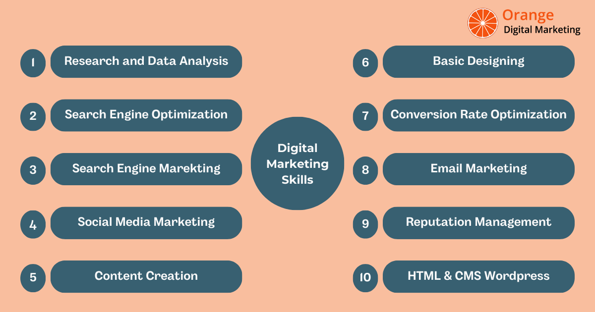

Absolutely! Here’s a detailed breakdown of the 8 essential digital marketing skills every modern marketer should master to stay relevant and effective in the fast-evolving digital landscape:
The need for a digital marketer has become crucial in today’s business environment because the world is now digital-first—consumers are online more than ever before, and businesses must meet them where they are.
Here’s a detailed breakdown of why digital marketers are essential:

🔹 1. Increased Online Presence is a Must
Why it matters:
- Customers search for products and services online first—through Google, social media, or e-commerce platforms.
- Without digital marketing, businesses lose visibility in the digital world.
Role of a digital marketer:
- Build and maintain a strong online presence.
- Make the brand visible on search engines, social media, websites, and ads.
🔹 2. Targeted Marketing = Better ROI
Why it matters:
- Traditional advertising (TV, print) reaches a broad audience.
- Digital marketing allows highly targeted campaigns based on age, interests, location, behavior, etc.
Role of a digital marketer:
- Use tools like Google Ads, Facebook Ads, email segmentation to reach the right people at the right time.
- Reduce wasteful spending and maximize return on investment (ROI).
🔹 3. Data-Driven Decisions
Why it matters:
- Online marketing is measurable. You can track clicks, conversions, bounce rates, and more.
- This data helps businesses adapt quickly and make smart decisions.
Role of a digital marketer:
- Analyze performance data from platforms like Google Analytics, Meta Business Suite, etc.
- Optimize campaigns for better performance using real-time feedback.
🔹 4. Build Strong Customer Relationships
Why it matters:
- Modern customers value engagement and authenticity.
- Social media, email, and content marketing help build two-way communication.
Role of a digital marketer:
- Create engaging content, run polls, respond to comments, and send personalized emails.
- Build trust, loyalty, and long-term relationships with the audience.
🔹 5. Stay Ahead of Competitors
Why it matters:
- Businesses that embrace digital marketing grow faster and gain a competitive edge.
- Your competitors are already online—if you’re not, you’re falling behind.
Role of a digital marketer:
- Keep up with trends, use tools like AI, SEO, paid ads, and identify gaps in the market.
- Launch innovative and effective digital campaigns.
🔹 6. Global Reach with Low Cost
Why it matters:
- Digital platforms allow small businesses to reach a global audience, even with a limited budget.
Role of a digital marketer:
- Use cost-effective strategies like SEO, organic social media, content marketing, and email to grow.
- Scale campaigns from local to international markets.
🔹 7. Adapting to Consumer Behavior
Why it matters:
- Consumers now prefer to shop, read reviews, and make decisions online and on mobile devices.
Role of a digital marketer:
- Ensure brands are mobile-friendly, visible on search, and active on platforms like Instagram, TikTok, YouTube, and WhatsApp.
- Tailor messages to suit the modern buying journey.
Importance of having these skills:
Having digital marketing skills is extremely important today—whether you’re a student, entrepreneur, freelancer, or job seeker. Here’s a clear breakdown of why it’s important to have these skills in the modern digital era:
1. The World Has Gone Digital
Why it matters:
- People spend hours daily on social media, websites, search engines, and mobile apps.
- Businesses, services, and even education are now largely online.
Why these skills help:
- Digital marketing skills allow you to thrive in a digital-first world, connect with online audiences, and stay relevant.
2. Career Opportunities Are Growing
Why it matters:
- Digital marketing is one of the fastest-growing industries globally.
- Businesses in every sector need digital marketers—from retail and healthcare to education and real estate.
Why these skills help:
- They make you highly employable.
- You can work in roles like SEO specialist, content marketer, social media manager, email marketer, or digital strategist.
- Freelancing and remote work opportunities are abundant.
3. Entrepreneurship & Business Growth
Why it matters:
- Business success today depends on online visibility, customer engagement, and digital sales.
Why these skills help:
- If you run a business, you can promote your products or services without depending on expensive agencies.
- You’ll know how to build a brand, run ads, create content, and attract customers online.
4. Work from Anywhere (Freelance/Remote)
Why it matters:
- Many companies now prefer to hire remote digital marketers or freelancers for projects.
Why these skills help:
- You can work from home or travel the world while offering services like:
- Social media management
- Email campaigns
- Video editing
- SEO optimization
- Platforms like Upwork, Fiverr, and LinkedIn are full of digital marketing gigs.
5. Cost-Effective Marketing Knowledge
Why it matters:
- Traditional marketing (TV, print) is expensive and less targeted.
Why these skills help:
- With basic digital marketing knowledge, you can reach thousands of people with a small budget.
- You can run ads, automate emails, or grow on social media with low cost and high results.
6. Stay Ahead of the Competition
Why it matters:
- The job market is highly competitive.
- Businesses with digital presence outperform those without.
Why these skills help:
- Having digital skills sets you apart from others in any industry.
- Even if you’re in HR, sales, or teaching—digital marketing adds versatility to your career profile.
7. Adapt to Technology & Innovation
Why it matters:
- Marketing is evolving with AI, automation, voice search, and personalization.
Why these skills help:
- You’ll be able to adapt faster to changes in technology and use tools like:
- ChatGPT for content
- Google Analytics for data
- Canva for design
- Mailchimp for email automation
8. Empowerment & Independence
Why it matters:
- Many people want to start side businesses, personal brands, or passion projects.
Why these skills help:
- You can build your own blog, YouTube channel, or Instagram brand.
- You’ll have the freedom to create, promote, and earn independently.
Final Thoughts:
Having digital marketing skills is important because:
- They open career and income opportunities.
- They help you succeed in the digital economy.
- They build adaptability, creativity, and data literacy.
- They allow you to build, grow, and promote anything online.
Whether you want to land a job, grow a business, freelance, or just stay competitive, digital marketing is a power skill for the modern age.
Skills That Every Digital Marketer Needs
1. Video Marketing
What it is:
Video marketing involves creating and sharing video content to promote a brand, educate your audience, tell stories, or demonstrate products/services. Popular platforms include YouTube, Instagram Reels, TikTok, Facebook, and even your website.
Why it’s essential:
- High retention: Viewers remember 95% of a message via video, compared to only 10% via text.
- Better engagement: Video content generates more shares, likes, and comments.
- Algorithms favor video: Platforms prioritize videos in their feed to boost user engagement.
Key aspects to master:
- Storytelling & Scripting: Learn how to create emotionally compelling, structured narratives.
- Editing Tools: Familiarize yourself with tools like:
- CapCut (mobile-friendly)
- Canva (easy animations and editing)
- Adobe Premiere Pro (professional editing)
- YouTube SEO: Optimize titles, tags, thumbnails, and descriptions for better visibility.
- Short-Form Video: Focus on Reels, Shorts, and TikToks, where attention spans are short.
2. SEO (Search Engine Optimization) & SEM (Search Engine Marketing)
What it is:
- SEO: Organic strategies to increase your content’s visibility in search engine results.
- SEM: Paid strategies (e.g., Google Ads) to rank higher in search results quickly.
Why it’s essential:
- Increases targeted organic traffic.
- Builds authority and trust.
- SEM offers immediate visibility, while SEO ensures long-term growth.
Key aspects to master:
- Keyword Research: Use tools like Ahrefs, Ubersuggest, or SEMrush to identify keywords your audience is searching for.
- On-page SEO: Optimize content titles, headers, alt-text for images, and site speed.
- Link Building: Earn backlinks to improve site authority.
- Google Ads & PPC: Learn how to set up campaigns, bid strategically, and measure ROI.
3. Content Marketing
What it is:
Content marketing is the creation and strategic distribution of useful, relevant content to attract and engage your ideal audience.
Why it’s essential:
- Powers your SEO, email marketing, and social media.
- Builds brand authority and trust over time.
- Drives organic traffic and lead generation.
Key aspects to master:
- Blog Writing & Storytelling: Learn to write valuable and engaging content.
- Content Calendars: Plan consistent and strategic content using tools like Trello, Asana, or Notion.
- Repurposing Content: Convert blog posts into infographics, videos, or Instagram carousels.
- Tools to Use: Grammarly (grammar), HubSpot (management), Buffer (distribution).
4. Data & Analytics
What it is:
This skill involves tracking, analyzing, and interpreting marketing data to improve strategies and understand customer behavior.
Why it’s essential:
- Identifies what works and what doesn’t.
- Provides a clear picture of ROI.
- Allows for data-driven decision-making.
Key aspects to master:
- Google Analytics & GA4: Track user behavior, conversion paths, and bounce rates.
- KPIs & Goals: Know how to set and track goals like click-through rate (CTR), cost per lead (CPL), and customer lifetime value (CLV).
- Funnel Analysis: Understand where users drop off in the sales funnel.
- Heatmaps & A/B Testing: Tools like Hotjar, Crazy Egg, and Google Optimize help test and visualize user activity.
5. AI & Automation
What it is:
Using artificial intelligence and automation to streamline marketing tasks, improve targeting, and personalize customer experiences.
Why it’s essential:
- Saves time and increases productivity.
- Enables personalization at scale.
- Helps marketers predict behavior and create smarter campaigns.
Key aspects to master:
- Chatbots & AI Assistants: Use tools like ManyChat, Tidio, or ChatGPT to assist users.
- Email Automation: Platforms like Mailchimp, Brevo, or ActiveCampaign automate nurture sequences and responses.
- AI Tools for Content: Use Jasper.ai, ChatGPT, or Canva Magic Write for generating creative content quickly.
- CRM Workflows: Learn to manage customer journeys in tools like HubSpot, Zoho, or Salesforce.
6. Design Thinking & Campaign Planning
What it is:
A human-centered approach to creative problem-solving and campaign development focused on the user’s needs and experience.
Why it’s essential:
- Improves UX and engagement.
- Encourages innovation and empathy in campaigns.
- Ensures your solutions are functional and user-friendly.
Key aspects to master:
- User Journey Mapping: Understand customer pain points and map their experience.
- Campaign Ideation & Planning: Use frameworks to structure your campaigns.
- Wireframes & Mockups: Tools like Figma, Adobe XD help plan visual content.
- Collaboration Tools: Plan and brainstorm with tools like Notion, Miro, Trello.
7. Social Media Marketing
What it is:
The use of social platforms (Instagram, Facebook, LinkedIn, TikTok, Twitter, Pinterest) to build a brand, engage with audiences, and promote products or services.
Why it’s essential:
- Directly connects brands with users.
- Builds community, loyalty, and brand awareness.
- Offers real-time feedback from your audience.
Key aspects to master:
- Content Creation: Use Canva, Later, or InShot to design posts.
- Scheduling Tools: Automate posts with Hootsuite, Buffer, Later.
- Strategy & Planning: Develop audience personas and platform-specific tactics.
- Influencer Marketing: Identify and collaborate with micro or macro influencers.
- Social Listening: Tools like Sprout Social track brand mentions and trends.
8. Email Marketing
What it is:
A strategic channel to send messages directly to leads or customers, encouraging engagement, promotions, or nurturing relationships.
Why it’s essential:
- Offers highest ROI among digital channels.
- Great for customer retention and repeat business.
- You own your audience (unlike social media).
Key aspects to master:
- Segmentation: Divide your list by behavior, demographics, or interests for personalized content.
- Automation Flows: Set up sequences for:
- Welcome emails
- Abandoned cart reminders
- Product recommendations
- A/B Testing: Test subject lines, images, calls-to-action to optimize open and click rates.
- Tools to Use: ConvertKit, Mailchimp, Brevo, Klaviyo for e-commerce.
Final Thoughts:
Mastering these 8 digital marketing skills will make you a well-rounded marketer equipped to handle both the creative and analytical sides of modern digital campaigns. Whether you’re aiming for a job, freelancing, or running your own business, these skills provide a solid foundation for growth, innovation, and success.
We have these skills you can contact us for our digital marketing services click here